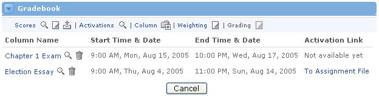

Viewing All Activations
As more and more columns become activated for enrolled users, you may eventually become confused as to which columns are activated and which are not. In this scenario, you can choose to view all activations. This will give you the complete picture as to which assignments and exams are currently active. Here's how to view all activations:
- In the Gradebook channel, locate the Activations link at the top of the channel.
- Click Activations link, or the magnifying glass icon next to it.
- You will now see the Current Activations screen.
|

This screen is broken up into four sections:
- Column Name - This is the name of the column on the main view
- Start Time & Date - This is the time when the activation begins
- End Time & Date - This is the time when the activation ends
- Activation Link - Click to access the assessment, URL, or uploaded file associated to this activation.
